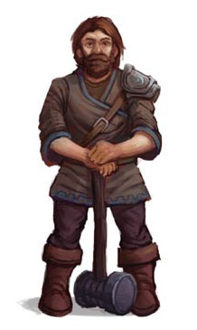
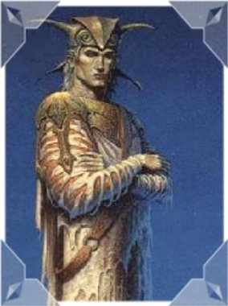
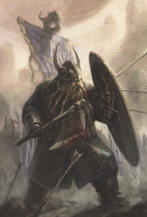
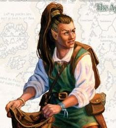
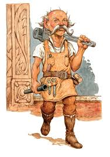
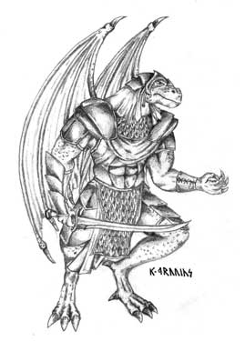

Races
The races of Krynn are wide and varied. Below are a listing of most of the races you will run into in both the Chronicles and Lost Chronicles.
Humans
The most common and wide spread of the races. They are one of the three original races of Krynn. Their origin comes from the god Gilean to represent neutrality. and freedom of choice. Humans are thought of in one of two categories: Civilized or Nomad. Civilized humans are the most wide spread with the biggest variations in personalities and cultures. Civilized humans due to their spread have a tendency to get in more conflicts with other races. Nomads on the other hand are thought of as wild savages. They tend to keep to themselves but stalwart friends to those they trust. They pride themselves on their survival abilities.
Elves
The second of the three original races. Elves come from Paladine and given wisdom and beauty and a long life span. The original elves were called the Silvanesti and with the help of the gods of magic and the elven leader Silvanost founded their land. Later Silvanost younger grandson Kith-Kanan wanting a better contact with the outside world and social equality seperated from his homeland to found the Qualinesti elves. The Kagonesti elves are seen as barbarians and desire to live in the wilds and with nature. The other elven races are the Dargonesti (Sea elves) and the Dimernesti (Shoal elves).
Dwarves
Dwarves were once Gnomes that were changed by the mythical artifact the Graygem due to them hoarding it. Dwarves would have you believe they were created by the god Reorx. Not overly friendly to other races but open to friends. Ranging4-5 feet tall they take immense pride in their beards. Known for the artisans, crafters, and miners. Races include mountain dwarves who dwell within Thorbardin and are rather reclusive. Hill dwarves who have left the mountain home and known for the more acceptance of other races. Other races include the Derro (Dark dwarves) and the Aghar (Gully Dwarves).
Kender
Kender were created by the transforming of the gnomes who wished to capture and study the Graygem. They resemble halflings but of a more mischievious nature. They have a natural resistance to fear. They have tendency to "borrow" items from others and resembkes kleptomania. They are known for their lockpicking and thieving abilities. They have a childlike appearence. One of their greatest joys is to travel
Gnomes
Coming from the scions which helped Reorx forge the world. He cursed them for wanting to develop items for themselves. Called Minoi they are quite short with brown skin. They have a tendency to speak very very fast almost to the point of nonsense. They are constantly designing and inventing. With them being inventors their inventions have a tendency of failing due to their philosophy of theres no point if it can't be fixed. They are the ancestors of dwarves and kenders. Also their names are a recording of familial history which can go on for a very long time if not interrupted.
Goblins

These are said to be evil creatures of mixing elven and ogres. They help constitue a formidable force for the Dark Queen Takhisis. The goblin race include: Bugbears, Hobgoblins, and half goblins.
Draconians
Also called dragon men. They come from good draon eggs that have been corrupted with dark magic. During the Chronicles and Lost Chronicles they served as assault/special forces for Takhisis. They have five subspecies: Baaz, Kapak, Sivak, Aurak, and Bozak. They revere Takhis but seen as animals by her. Just like there dragon descendants they have multiple varianst such as: vapor, frost, lightning, flame, and venom.